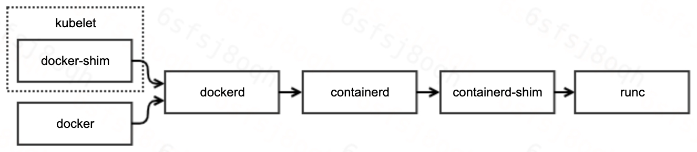
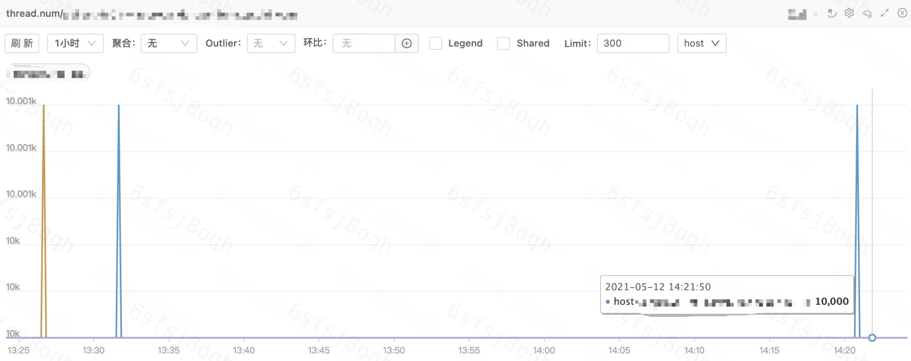
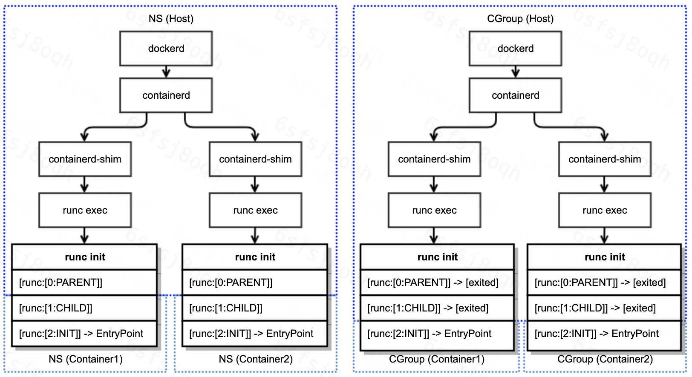

锄禾日当午，值班好辛苦；
汗滴禾下土，一查一下午。
问题描述
今天，在值班排查线上问题的过程中，发现系统日志一直在刷docker异常日志：
1 | May 12 09:08:40 HOSTNAME dockerd[4085]: time="2021-05-12T09:08:40.642410594+08:00" level=error msg="stream copy error: reading from a closed fifo" |
从系统风险性上来看，异常日志出现的原因需要排查清楚，并摸清是否会对业务产生影响。
下文简单介绍问题排查的流程，以及产生的原因。
问题排查
现在我们唯一掌握的信息，只有系统日志告知dockerd执行exec失败。
在具体的问题分析之前，我们再来回顾一下docker的工作原理与调用链路：

可见，docker的调用链路非常长，涉及组件也较多。因此，我们的排查路径主要分为如下两步：
- 确定引起失败的组件
- 确定组件失败的原因
定位组件
熟悉docker的用户能够一眼定位引起问题的组件。但是，我们还是按照常规的排查流程走一遍：
1 | // 1. 定位问题容器 |
由上可知，异常是runc返回的。
定位原因
定位异常组件的同时，runc还给了我们一个惊喜：提供了详细的异常日志。
异常日志表明：runc exec失败的原因是因为 Resource temporarily unavailable，比较典型的资源不足问题。而常见的资源不足类型主要包含（ulimit -a）：
- 线程数达到限制
- 文件数达到限制
- 内存达到限制
因此，我们需要进一步排查业务容器的监控，以定位不足的资源类型。

上图展示了业务容器的线程数监控。所有容器的线程数都已经达到1w，而弹性云默认限制容器的线程数上限就是1w，设定该上限的原因，也是为了避免单容器线程泄漏而耗尽宿主机的线程资源。
1 | # cat /sys/fs/cgroup/pids/kubepods/burstable/pod64a6c0e7-830c-11eb-86d6-b8cef604db88/aa1e331ec24f621ab3152ebe94f1e533734164af86c9df0f551eab2b1967ec4e/pids.max |
至此，问题的原因已定位清楚，对，就是这么简单。
runc梳理
虽然，我们已经定位了异常日志的成因，但是，对于runc的具体工作机制，一直只有一个模糊的概念。
趁此机会，我们以runc exec为例，梳理runc的工作流程。
- runc exec首先启动子进程runc init
- runc init负责初始化容器namespace
- runc init利用C语言的constructor特性，实现在go代码启动之前，设置容器namespace
- C代码nsexec执行两次clone，共三个线程：父进程，子进程，孙进程，完成对容器namespace的初始化
- 父进程与子进程完成初始化任务后退出，此时，孙进程已经在容器namespace内，孙进程开始执行go代码初始化，并等待接收runc exec发送配置
- runc exec将孙进程添加到容器cgroup
- runc exec发送配置给孙进程，配置主要包含：exec的具体命令与参数等
- 孙进程调用system.Execv执行用户命令
注意：
- 步骤2.c与步骤3是并发执行的
- runc exec与runc init通信基于socket pair对（init-p和init-c）
runc exec过程中各进程的交互流程，以及namespace与cgroup的初始化参见下图：

综合我们对runc exec执行流程的梳理，以及runc exec返回的错误信息，我们基本定位到了runc exec返回错误的代码：
1 | func (p *setnsProcess) start() (err error) { |
现在，问题的成因与代码分析已全部完成。